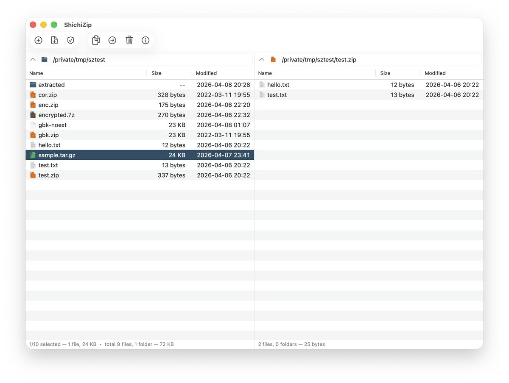

奶昔🥤
@realNyarime
@nexmoe 是黎明余光大佬的作品🫡

Nexmoe - Dreamweaver
@nexmoe
朋友把 7-Zip 原生移植到了 macOS 上。
macOS 一直没有正经的 7-Zip 原生版本，系统只认 zip，The Unarchiver 年久失修，Keka 也只是凑合。
现在有了个 Swift 写的 7-Zip 衍生，LGPL 开源：
https://t.co/RLVQALt72D https://t.co/EOW62aGGBf